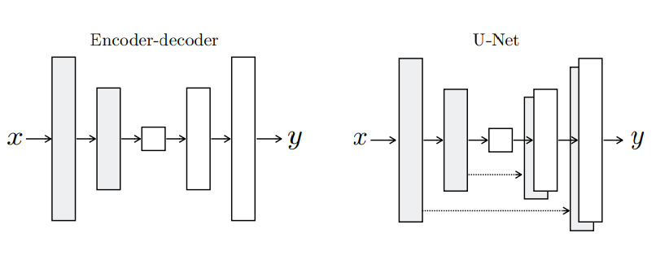
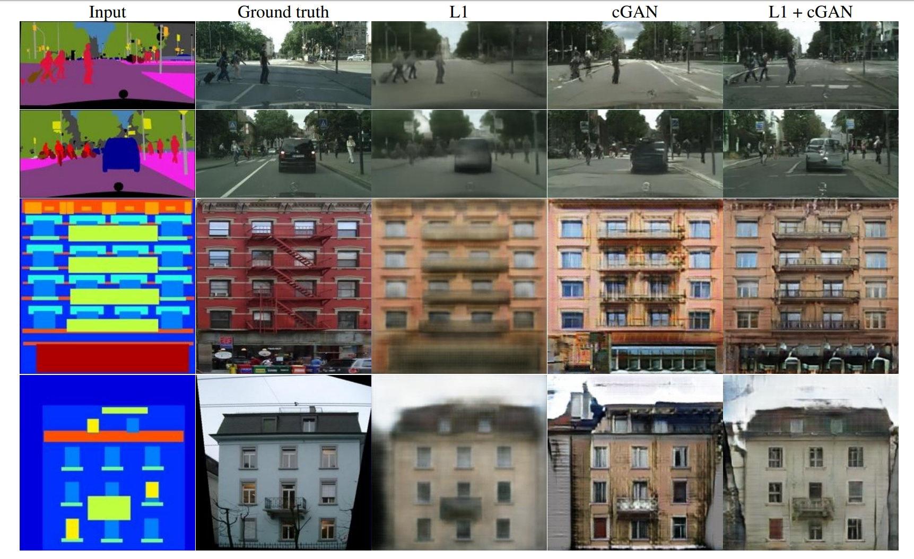

pix2pix
Oi gente, aqui inicio minha primeira postagem-análise de um artigo. Escrevo sobre o *pix2pix*, um trabalho abraçado pela comunidade artística experimental por ser um gerador de imagens a partir de uma entrada visual (ou seja, uma imagem).

A ferramenta tem seu método descrito no artigo Image-to-Image Translation with Conditional Adversarial Nets , um trabalho apresentado na conferência Computer Vision and Pattern Recognition, no Havaí em 2017.
A Ideia
A ideia dos autores do sistema é a concepção de uma ferramenta para tradução entre imagens. Eles apontam que já existem sistemas para essa finalidade, mas que são modelos diferentes para cara um desses fins. Portanto, o trabalho convém uma rede de geração adversária condicional (cGAN), adaptável a diferentes problemas "imagem-para-imagem".

Rede de Geração Adversária (GAN)
Na sua proposição clássica, a GAN reproduz uma disputa entre duas redes, a rede geradora G e a discriminadora D, a que vai verificar a saída da primeira rede. As regras gerais da disputa são:
- A rede geradora recebe como entrada um vetor de ruído z e tem como saída uma imagem y;
- A rede discriminadora, a que julga, recebe como entrada uma imagem x e a imagem y, saída da rede geradora;
- A rede discriminadora determina se a saída de y é parte do groundtruth com x, ou seja, se y é uma imagem real ou se ela é falsa;
- O objetivo de D é minimizar seu erro, enquanto o objetivo de G é maximizar o erro de D.
Dessa forma, idealmente, evoluimos duas redes, uma especialista em discernir se uma imagem foi gerada artificialmente a partir do vetor z e uma rede especialista em gerar imagens que enganam a primeira rede. Estendendo a definição a seu limite, teremos uma rede G que gera imagens tão convincentes que a rede D sempre retornará 0.5, que se interpretaria como "pode ser real ou não".
cGAN, sua versão condicional
Uma adaptação da rede de geração adversária leva em consideração uma imagem x como entrada da rede geradora G. Dessa forma, concebe-se uma rede que realiza uma operação de imagem para imagem. Assim como a GAN, a rede G tenta diminuir o objetivo de D e, por sua vez, D tenta aumentar seu próprio objetivo.
São as regras da cGAN:
- G recebe uma imagem x e um vetor de ruído z como entradas;
- D, por sua vez, recebe uma imagem x e a saída de G;
- A função loss calcula o inverso desse objetivo, na tentativa de minimizá-lo;
- D avalia seu resultado tendo como entradas as imagens x e y;
Para isso, temos que loss de cGAN é:
LcGAN = Ex,y[log D(x, y)] + Ex,y[log (1 - D(x, G(x, z)))]
Para forçar as saídas do gerador a resultados mais próximos do ground truth, o autor sugere acrescentar uma outra função objetivo L1, que em comparação com L2 gera menos blur:
LL1 = Ex,y,z[|y - G(x, z)|]
Portanto, a função objetivo final se torna:
G* = arg min max LcGAN(G, D) + λ LL1(G)
As arquiteturas em disputa
Para a rede geradora, o autor adota uma arquitetura U-Net e para a rede discriminadora, uma arquitetura PatchGAN.
U-Net é uma arquitetura encoder-decoder com conexões que passam direto entre camadas.
Resultados
O uso de diferentes funções objetivo levam a qualidades diferentes de imagens